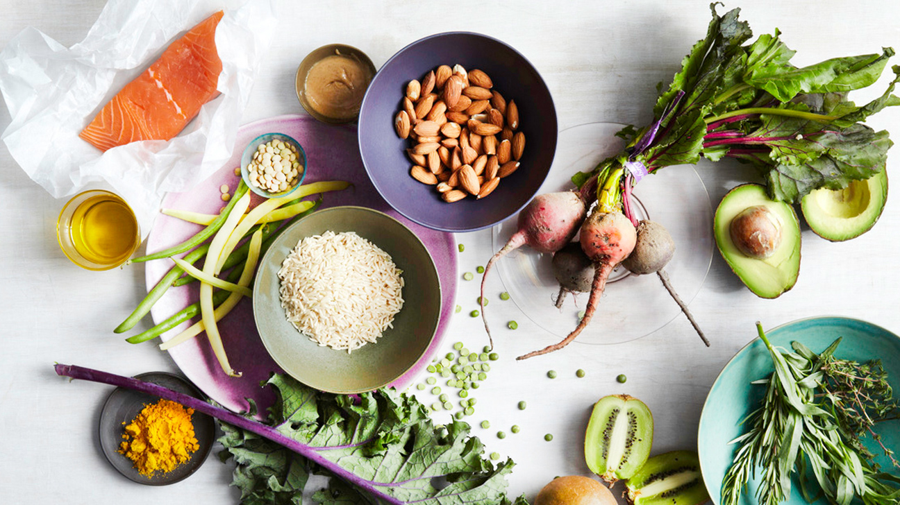

I am a preson who loves food! So much so that I have made a website to list some of the recipes I love! I hope you enjoy them as much as me.
This pot roast is made by the Food Network!
Keto friendly unless you want to make sandwhiches or use crackers for a dip!